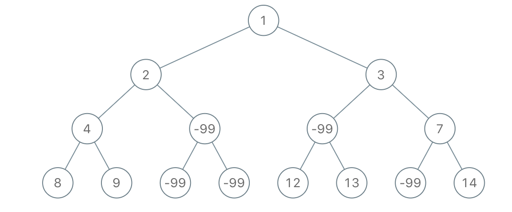
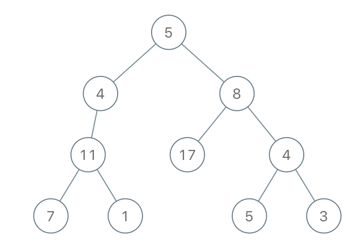
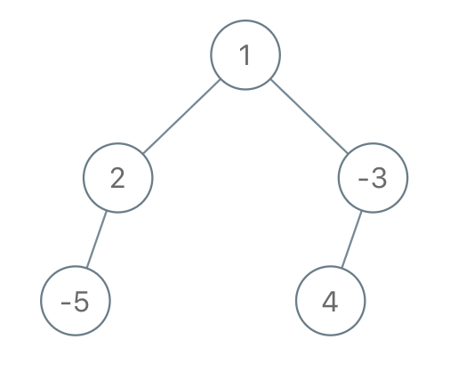

1080. 根到叶路径上的不足节点
后序 DFS：叶子看「根到叶整条路径和 ≥ limit」；内部结点看孩子——孩子全被删，自己也删（连坐）。
思路
- 自底向上：
dfs(node, path)返回「node 子树里还存在路径和 ≥ limit 的根叶路径吗」，path是根到 node 的路径和。 - 叶子：直接判
path + node.val >= limit，这条路径就是它自己。 - 内部结点：左右孩子分别递归；返回 false 的孩子指针置
null（孩子全不足 → 自己也连坐删除），自己left || right。 - 根也保不住就返回
null（空树）；路径和用long防累加溢出。
图解
最优解
1class Solution {2 public TreeNode sufficientSubset(TreeNode root, int limit) {3 // 根如果也保不住（所有路径都不足），整棵树删空返回 null4 return dfs(root, 0, limit) ? root : null;5 }6 7 // 后序：先算左右孩子是否保留，再决定自己；返回「node 子树里还有没有路径和 ≥ limit 的根叶路径」8 private boolean dfs(TreeNode node, long path, int limit) {9 if (node.left == null && node.right == null) {10 return path + node.val >= limit; // 叶子：看整条路径和11 }12 boolean left = node.left != null && dfs(node.left, path + node.val, limit);13 boolean right = node.right != null && dfs(node.right, path + node.val, limit);14 if (!left) node.left = null; // 孩子全不足 → 连自己一起删（父结点也保不住）15 if (!right) node.right = null;16 return left || right;17 }18}题目
给你二叉树的根节点 root 和一个整数 limit ，请你同时删除树中所有 不足节点 ，并返回最终二叉树的根节点。
假如通过节点 node 的每种可能的 “根-叶” 路径上值的总和全都小于给定的 limit，则该节点被称之为 不足节点 ，需要被删除。
叶子节点，就是没有子节点的节点。
示例 1：

输入：root = [1,2,3,4,-99,-99,7,8,9,-99,-99,12,13,-99,14], limit = 1 输出：[1,2,3,4,null,null,7,8,9,null,14]
示例 2：

输入：root = [5,4,8,11,null,17,4,7,1,null,null,5,3], limit = 22 输出：[5,4,8,11,null,17,4,7,null,null,null,5]
示例 3：

输入：root = [1,2,-3,-5,null,4,null], limit = -1 输出：[1,null,-3,4]
提示：
- 树中节点数目在范围
[1, 5000]内 -105 <= Node.val <= 105-109 <= limit <= 109
题面取自力扣当前版本。
数据快照 2026-11-04。题面版权归力扣所有，本站点仅供本人学习使用，请勿对外发布。